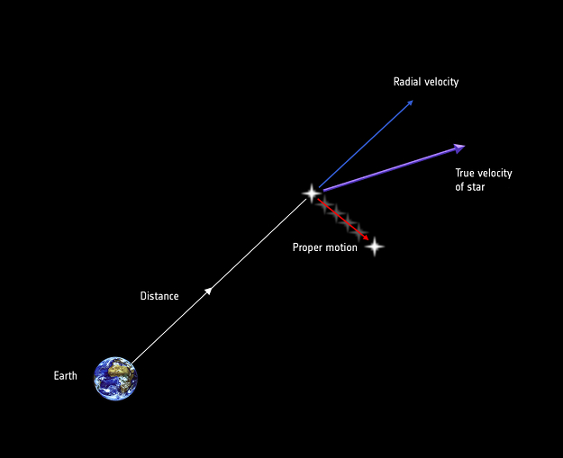
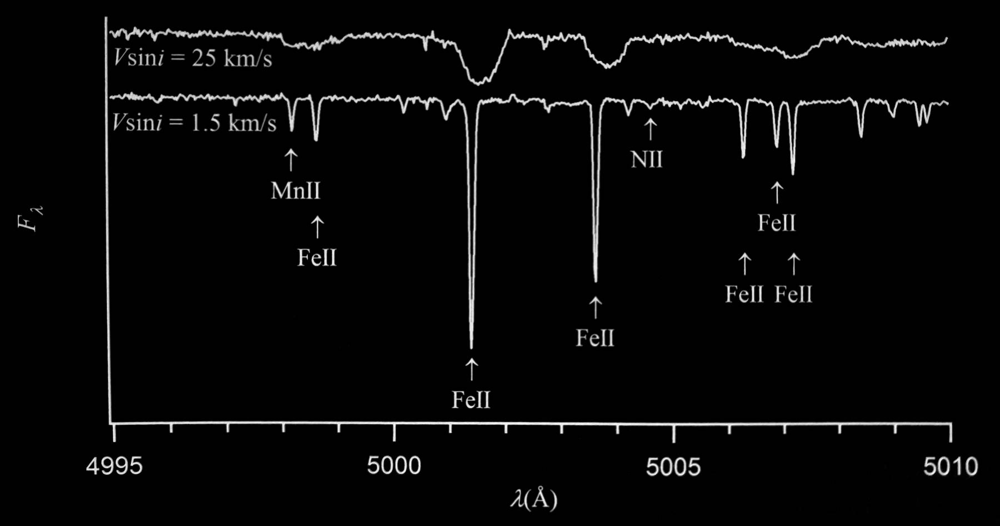

The Milky Way and Large Surveys
Heidelberg Physics Grad Days, 4-8 October 2021
Gregory Green
Why Study the Milky Way?
A major goal of astrophysics is to explain how you get from the initial conditions of the Universe ...
... to the smallest scales.
Many of the processes involved are best studied in the Milky Way.
The Milky Way is a typical large disk galaxy,
and it's (almost) the only galaxy that we can see star-by-star.
The Milky Way is a "model organism" for...
- galaxy formation.
- stellar populations & physics.
- star-formation and the interstellar medium.

The Milky Way

Dark matter halo: $\sim 10^{12} \, M_{\odot}$.
Stellar mass: a few $10^{10} \, M_{\odot}$.
The stars reside in a rotating disk (possibly with multiple components), a bulge/bar and a stellar halo.
It has a population of satellite galaxies, including the Magellanic Clouds.
Some open questions

How is dark matter distributed within the Galaxy?
What triggers star formation? Under what conditions is it efficient?
What is the 3D structure of the interstellar medium?
Three types of data used to approach these questions
- Photometry: fluxes of stars through broad filters.
- Spectroscopy: stellar flux vs. wavelength.
- Astrometry: the positions and motions of the stars.
Photometry
Fluxes of stars through broad filters
Flux: $f_{\nu} = \frac{\mathrm{d}E}{\mathrm{d}A \, \mathrm{d}t \, \mathrm{d}\nu}$.
(astronomers work with Janskys: $1\,\mathrm{Jy} = 10^{-26} \, \mathrm{W} \, \mathrm{m}^{-2} \, \mathrm{Hz}^{-1}$)
CCDs count photons, not energy flux: $ \frac{\mathrm{d}n_{\gamma}}{\mathrm{d}A \, \mathrm{d}t \, \mathrm{d}\nu} = \left( h\nu \right)^{-1} f_{\nu} \, . $
CCDs have a $\nu$-dependent efficiency, and we normally use filters: $T\left(\nu\right)$.
⇒ The flux of photons we detect is given by $ \frac{\mathrm{d}n_{\gamma}}{\mathrm{d}A \, \mathrm{d}t} = \int \left(h\nu\right)^{-1} f_{\nu} \left(\nu\right) T\left(\nu\right) \mathrm{d}\nu \, . $
Astronomers work with magnitudes, defined as $ m = -2.5 \log_{10} \left( \frac{n_{\gamma}}{n_{\gamma,0}} \right) \, , $ where $n_{\gamma,0}$ is the number of photons we would measure from a defined standard source.
An increase of 2.5 mag corresponds to a decrease of 10× in flux.
Photometry
Disadvantages
Entire spectrum boiled down to one number.
→ Loss of information.
Advantages
Can measure more stars more quickly.
→ Breadth and depth.
Disadvantages
Entire spectrum boiled down to one number.
→ Loss of information.
Advantages
Can measure more stars more quickly.
→ Breadth and depth.
Sloan Digital Sky Survey (SDSS)
The first modern optical survey of a large area of the sky.
(Legacy Survey: 2000-2008)
The site
Two goals:
- Photometry of ¼ of the sky, centered on the Northern Galactic Pole.
- Take spectra and measure of the redshift of ~1 million nearby galaxies.
The SDSS camera
Transmission in each band
5 filters (u', g', r', i', z'), from near-UV to near-IR.
6 "camcols," each with 5 CCDs (one per filter).
"Drift-scanning"
- Shutter remains open as sky drifts across camera (downwards in diagram at left).
- Charges are shifted and CCDs are read out in sync with the sky.
- (for detailed reasons, the stipes are great circles, instead of curves of constant declination).
Each CCD is 2048⨉2048 pixels, with 0.396 arcsec/pixel.
⇒ Integration time per source = ?54 s
$$ \Delta \theta = \left( 2048\,\mathrm{pixels} \right) \left( 0.396\,\mathrm{arcsec/pixel} \right) = 811\,\mathrm{arcsec} \, . \\ \dot{\theta} = \left( 360\,\mathrm{deg/day} \right) \frac{ \left( 3600\,\mathrm{arcsec/deg} \right) }{ \left( 24\,\mathrm{h/day} \right) \left( 3600\,\mathrm{s/h} \right) } = 15\,\mathrm{arcsec/s} \, . \\ t = \Delta \theta / \dot{\theta} = 54\,\mathrm{s} \, . $$
The SDSS camera
One "run"
SDSS imaging sky coverage
Equatorial coordinates, sdss.org
Great-circle "stripes" (of nearly constant declination) generated by drift-scanning.
Imaging of two regions, avoiding the plane of the Milky Way.
Oblique stripes to link the two regions and improve the calibration.
Equatorial stripe (82) imaged more frequently.
Calibration
CCDs count photons (photoelecrons, actually), but we want to know a star's flux (e.g., at top of Earth's atmosphere).
Two common ways of calibrating a survey:
- Calibrate to a list of "standard stars" of known flux (e.g., HST CALSPEC stars).
- Make sure that repeat observations of the same star give the same flux: relative calibration.
"Ubercalibration"
Number of observations across SDSS footprint
Effects to model (for each band):
- Atmospheric extinction: $k \left( t \right) x$, where $x$ is airmass.
- Overall optical response (optics + filter + CCD): $a \left( t \right)$. Different every night.
- CCD flat field: $f_j$, where $j$ is the pixel column.
For one observation of one star in one band, $$ m_{\mathrm{calibrated}} = m_{\mathrm{raw}} + a + \left[ k_0 + \left( \frac{\mathrm{d}k}{\mathrm{d}t} \right) \left( t - t_0 \right) \right] x + f_j \, . $$
All these parameters can be constrained:
- We observe many different stars in each pixel column. → $f_j$.
- We observe fields at many different airmasses each night. → $k \left( t \right)$.
- We observe the same star on different nights. → $a \left( t \right)$
"Ubercalibration"
Calibration errors, based on simulated data: ±0.02 mag.
Results
Milky Way Tomography I. Stellar Density
Stellar locus in color-color space
Stellar locus in color-absolute-magnitude space
→ Estimate stellar distances using colors.
→ Assumes all stars are on main sequence.
→ Not a terrible assumption for this dataset.
Milky Way Tomography I. Stellar Density
Density in Galactic cylindrical coordinates, $\left( R, z \right)$, in different color bins
Milky Way Tomography I. Stellar Density
Three-component density model
Thin & thick disks: $$\rho \left(R,z\right) \propto \exp\left(-\frac{R}{L}-\frac{z}{H}\right)$$ $L$ = scale length, $H$ = scale height.
Oblate halo: $$\rho \left(R,z\right) \propto \left[R^2 + \left(\frac{z}{q_H}\right)^2\right]^{-n_H}$$ $q_H$ controls oblateness, $n_H$ = power-law exponent.
Milky Way Tomography II. Stellar Metallicity

Ultraviolet flux is particularly affected by metal absorption lines in stellar atmosphere.
Use $u-g$ color to estimate metallicity.
→ Accurate to ~0.2 dex in $\left[\mathrm{Fe}/\mathrm{H}\right]$.
Milky Way Tomography II. Stellar Metallicity
Separate disk and halo populations seen in metallicity-position space.
The "Field of Streams"
(intensity = density of stars, color = estimated distance of stars)
GD-1: a cold stream spanning 63° on the sky.
"Sagittarius Stream" & "Monoceros Ring" discovered earlier. "Orphan Stream" discovered by SDSS.
The Orphan Stream has no known progenitor.
NASA/JPL-Caltech/R. Hurt (SSC/Caltech)
Illustration of a stream.
SDSS-I/II also did plenty of science with spectra ...
... which I won't go into further here.
Pan-STARRS 1
(2009-2014)
1.4 Gigapixel camera
5-band photometry, similar to SDSS (below, in gray)
No near-UV, but greater efficiency in the infrared.
Surveys
PS1 carried out a number of surveys, including:
- Medium Deep Survey: high-cadence observations of 12 fields.
- 3π Survey: ¾ of the sky (everything North of -30° declination).
3D dust mapping
Using stellar photometry to map dust in the interstellar medium in 3D.
Will be discussed in more detail in a later lecture ...
Two-Micron All-Sky Survey (2MASS)
(1997-2001)
Two sites
Whipple Observatory in the North.
Cerro Tololo Interamerican Observatory in the South.
Enables all-sky coverage.
1.3 m telescope at each site.
3-band photometry in the near-IR, out to ~2 μm (hence the name):
Above, compared to the reddest PS1 bands.
Past ~2 μm, thermal emission from the atmosphere is too severe.
>300 million stars
LSST
(2023-)
Wide, fast, deep imaging survey of the Southern sky
- 8.4 m (6.5 effective) primary mirror.
- 6 near-UV to near-IR bands: u, g, r, i, z, y (SDSS + PS1)
- 9.6 deg² field of view.
- ~100 times deeper imaging than PS1.
Repeated, deep imaging of the whole Southern sky
Will revolutionize many areas of astronomy, including study of the Milky Way.
Spectroscopy
Flux as a function of wavelength
Spectra carry information about temperature, surface gravity, chemical abundances, and more.

This may look like noise, but it isn't.
Ab initio spectral models of stellar spectra:

Begin with a few numbers (temperature, surface gravity, chemical abundances, rotation, ...), and predict thousands of spectral lines.
APOGEE (SDSS-III/IV)
APO Galactic Evolution Experiment
(2009-2020)
NIR spectroscopy of the Milky Way disk
Why NIR?
→ Dust obscures the disk at optical wavelengths.
ESO/ATLASGAL consortium/NASA/GLIMPSE consortium/VVV Survey/ESA/Planck/D. Minniti/S. Guisard
The APOGEE spectrograph
Plug plate for optical fibers
Optical bench
Spectra on CCD - one per row
Resulting stellar spectrum
- Mounted on the 2.5 m telescope at APO (used by SDSS Legacy Survey) and on a similar telescope in Las Campanas, Chile.
- Fiber-fed spectrograph: ~300 spectra taken at a time.
- Resolution: $R \equiv \lambda / \Delta\lambda \sim 22500$.
Coverage
Began in the North. Recently expanded to the South.
← Coverage in stellar parameter space: temperature, surface gravity & metallicity.
Focuses on giants: red, luminous, can see through dust and at large distances.
Typical spectra of different stellar types

APOGEE has measured ...
- temperature, surface gravity, (overall) metallicity
- detailed abundances of ~20 elements
- radial velocities
... of ~400k stars in the Milky Way disk, bulge & halo.
Scientific results
Metallicity gradient in the Milky Way disk

Stacked red-clump star spectra at different Galactocentric radii, compared to spectra at the Solar Galactocentric radius ($R \approx 8\,\mathrm{kpc}$).
Redder = more metal absorption, bluer = less.
→ Outer disk less metal-rich than inner disk.
Tracing chemical evolution
- α elements generated during He-burning and type-II SNe.
- Fe generated by type-I SNe, which occur at a larger delay.
- Using this distribution, one can model ...
... star-formation efficiency (vs. time).
... gas outflow rates from the Milky Way disk.
SDSS-V

Pioneering Panoptic Spectroscopy
The next generation of Milky Way (+ local volume) spectroscopy
Components of SDSS-V

Milky Way Mapper
Moving beyond our local corner of the Milky Way, to survey a large fraction of the Galaxy.
Milky Way Mapper
More even sky coverage. → Easier to model spatial densities.
Milky Way Mapper
Re-uses the APOGEE spectrographs (+BOSS optical spectrographs), upgraded with automated fiber positioner robots.
Local Volume Mapper
Spatially resolved, medium resolution ($R \sim 4000$) optical spectra of the interstellar medium throughout the Milky Way, the Magellanic Clouds, Andromeda, and other nearby galaxies.
Local Volume Mapper: the Orion Nebula

The Orion nebula will be observed at a resolution of 0.07 pc/spaxel.
Detailed information about chemistry & ionization of the interstellar medium.
Local Volume Mapper: sky coverage

Astrometry
Positions and velocities of stars
Astrometry: position & velocity

Velocity
Parallax illustration
Parallax + proper motion illustration
How to practically measure parallax & proper motion?
Measuring absolute position on the sky to arcsecond ($=\frac{1}{3600} \, \mathrm{deg}$) precision is difficult.
Galileo & William Herschel proposed measuring angles between "double stars" (Herschel 1826).
→ Nearby stars have larger parallax than distant stars.
→ Angles between nearby stars easier to measure than absolute positions on sky.
Massively exaggerated example:
History of astrometry

Gaia: The Milky Way in 6D
ESA/Gaia/DPAC; A. Brown, S. Jordan, T. Roegiers, X. Luria, E. Masana, T. Prusti and A. Moitinho
How Gaia works
Gaia focal plane and instruments

Gravitational deflection of light by Solar System bodies
Radial Velocity Spectrometer
Optical element of RVS. EADS Astrium SAS, France
Basic properties
- RV measured using Doppler shift of atomic lines.
- Medium resolution: $R \equiv \lambda / \Delta\lambda \sim 11500$.
- Measures RV to <1 km/s for bright stars.
- Currently >7 million stars with measured RV. Will soon grow to >30 million.
Example spectrum on the CCD

Flux vs. wavelength

➞ Ca II triplet of absorption lines critical to determining RV.
Fundamental limitations on RV spectroscopy
Width of spectroscopic lines (Lorentz profile):
$$ \varphi \left( \nu \right) = \frac{ \Gamma / 4\pi^2 }{ \left(\nu-\nu_0\right)^2 + \left(\Gamma/4\pi\right)^2 } \, , $$
where
$$ \Gamma \sim \left( \mathrm{lifetime\ of\ atomic\ energy\ levels} \right)^{-1} \, , \\ \nu_0 = \mathrm{natural\ frequency\ of\ transition} \, . $$

Rotational broadening
Fast-rotating (above) vs. slowly rotating star (below). Both are 12000 K stars.
Similar effect caused by thermal motions in stellar atmosphere.
LeBlanc, "An Introduction to Stellar Astrophysics," 2010, p. 129.
Difficulties for Gaia's RV spectroscopy
Slitless spectroscopy

Simulation of JWST NIRCam slitless spectroscopy
Stellar spectra can overlap!
Mitigations:
- Scan the sky in different directions.
- Only look at narrow range of wavelengths.
⇒ Motivates choice of narrow wavelength range with several absorption lines (Ca II triplet), and medium (not high) dispersion.

Results from Gaia
Source density across the sky
Hertzsprung-Russel Diagram
With parallax, we can calculate absolute magnitude:
$$ M = m + \underbrace{ 5 \log_{10} \left( \frac{\varpi}{1\,\mathrm{mas}} \right) - 10 }_{ \equiv \mu } \, , \\ \mathrm{where} \\ m = \mathrm{apparent\ magnitude} \, , \\ \mu = \mathrm{distance\ modulus} \, . $$
Can study different stellar populations in detail.
→ E.g., unprecedented detail for the white dwarf cooling track.
Average radial velocity over the sky

Milky Way Rotation Curve
Rotation curves from Classical Cepheids (distances come from period-luminosity relation, velocities come from Gaia).
Gaia Collaboration, Katz+ (2018)
Rotational velocity ($v_{\phi}$) in the midplane of the Milky Way.
The rotation curve traces the gravitational potential of the Galaxy:
$$ v_{\mathrm{circ}}^2 \left( R \right) = R \frac{\partial \Phi}{\partial R} $$
All matter (baryonic and dark) contributes to the potential.
⇒ Possible to trace distribution of dark matter (if you can subtract baryonic contribution to the potential).
Velocities of local stars (<200 pc)

Stars are clumpy in velocity space.
Different ways to get clumps:
- Stars are born in clouds, and take time to disperse.
- Dynamical processes (e.g., resonances) shepherd stars into clumps.
- Accreted galaxies are kinematically distinct from Milky Way stars.
Gaia Enceladus (a.k.a. "The Sausage")

{kind=link}
{kind=link}
{kind=link}
Plot $v_{\theta}$ vs. $v_r$ for metal-rich stars above the Milky Way midplane.
Two populations:
- Cold, rotating population: $v_r \sim 0, \ v_{\theta} \sim 200 \, \mathrm{km/s}$ → "thick disk"
- Population of stars on highly radial orbits: $v_{\theta} \sim 0$ → "The Sausage"
The Sausage dominates higher above the MW midplane.
The Sausage disappears at lower metallicity.
Merger 8-11 Gyr ago.
The "Antoja Spiral"


Stars near the midplane of the Galaxy feel a nearly linear vertical restoring force.
⇒ $\left( z, \, v_z \right)$ dynamics is similar to an anharmonic oscillator.
⇒ Perturbations of the Milky Way disk should cause phase spirals in $\left( z, \, v_z \right)$-space.
Perturbation by a close passage of the Sagittarius dwarf galaxy ~500 Myr ago?
Gaia is ongoing ...
Next year: several times more radial velocities, and BP/RP spectra.
Eventually: full 5 years of astrometry & spectra.